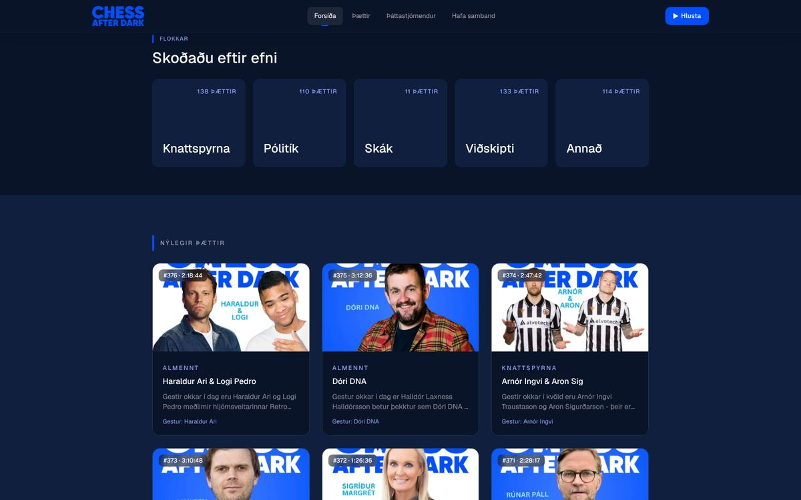
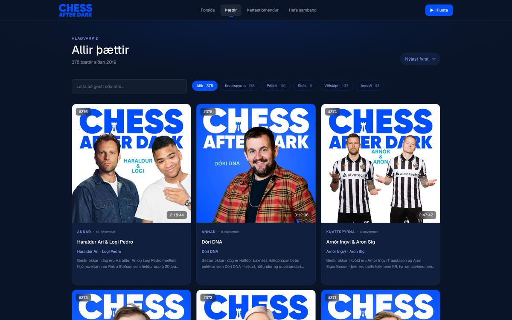
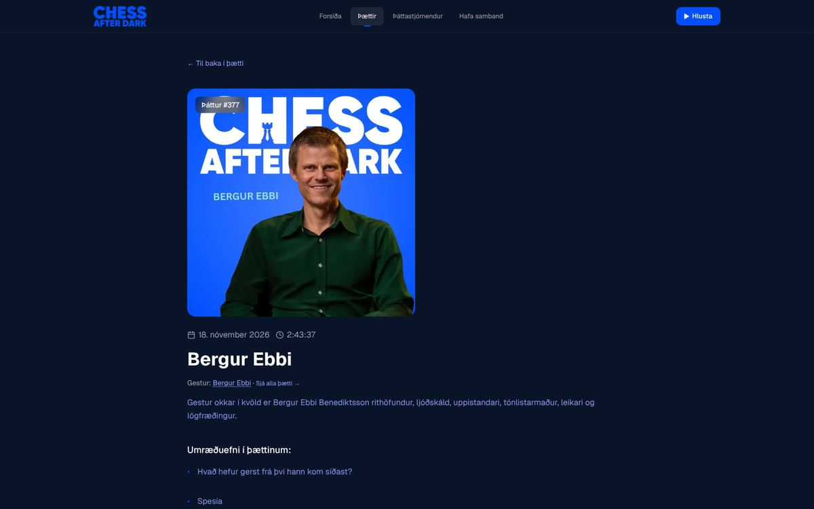
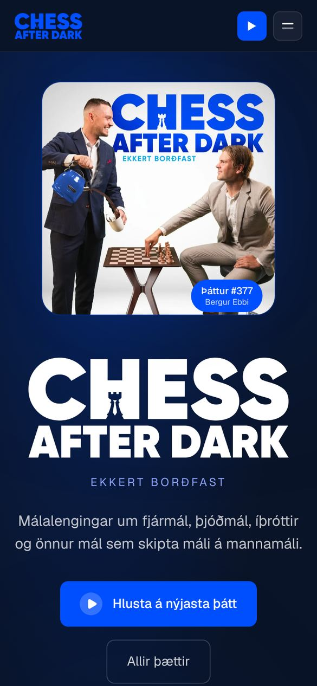

Chess After Dark
Eitt stærsta hlaðvarp landsins þurfti heimili fyrir hundruð þátta. Vefurinn leiðir gestinn frá nýjasta þættinum, í gegnum safnið og alla leið að þættinum sem hann leitar að.
Skoða vefinn- 370+
- þættir
- 2.5M+
- spilanir
- 1M+
- klst. hlustað



